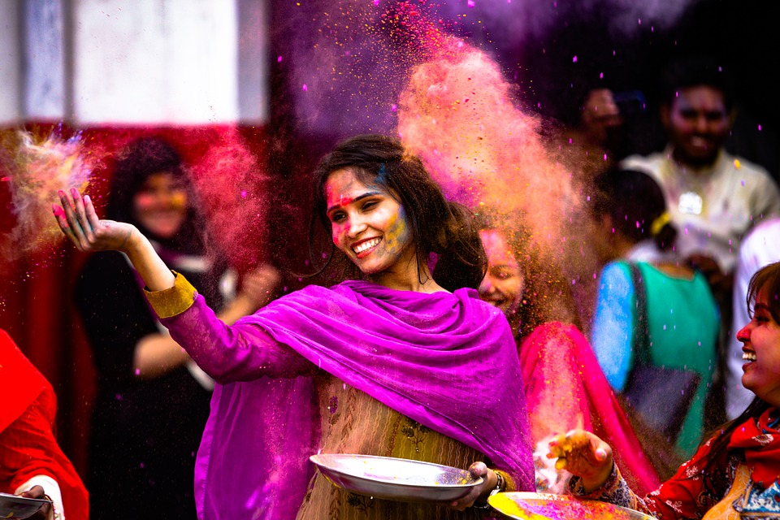

Diversity in INDIA
Culture is defined as a people’s way of life. It also entails how they dress, how they speak, the type of food they eat, the manner in which they worship, and their art among many other things.

Indian culture, therefore, is the Indians’ way of life. Because of the population diversity, there is immense variety in Indian culture. The Indian culture is a blend of various cultures belonging to belonging to diverse religion, castes, regions follow their own tradition and culture.
Indian Culture is one of the oldest cultures in the world. India had an urban civilization even during the Bronze age. The Indus Valley Civilization (Harappan Civilization) dates back to 3300 BC – 1300 BC.
Distinct cultures that are different from each other co-exist together in a single country. Thus, In India there is unity amidst vast cultural diversity. The way people live in India is reflected its culture.
Unity in Diversity: India is a land of unity in diversity where people of different sects, caste and religion live together. India is also called the land of unity in diversity as different groups of people co-operate with each other to live in a single society. Unity in diversity has also become strength of India.
Secularism: The word secularism means equality, impartiality, etc. towards all religion. India is a secular country, which means, equal treatment of all the religions present in India.
Traditions: traditional cultural values
Gestures
Touching feet of elders: Indian tradition has rich cultural values. In India, younger show great respect to their elders. They tough the feet of their elders daily after waking up and especially on the festive occasions or before starting an important work.
Namaste: The gesture of the Namaste greeting is also part of the Indian culture. People greet each other by saying “Namaste” while joining their hands. “Namaste” means “Hello”. (Also read, the meaning of Namaste here.)
Most Indians have a habit of shaking their heads while talking.
Fasting: Many Hindus follow the custom of fasting during any religious occasion like Maha-Shivratri,, Diwali, Karvachauth, etc. Wives go on fasting for their Husband’s long life in many occasions like “Karvachauth”, etc.
Many people belonging to Muslim faith go for fasting for around 30 days during the month of Ramazan.
Atithi Devo Bhava: In India, people feel great when any guest comes to their home. They greet their guests with respect and them with utmost care. Indian believes in the concept of “Atithi Devo Bhava” which means “The Guest is considered equal to God”.
Vedic Mantras: Chanting of ancient Vedic mantras are common practice during all religious events. Some mantras are repeated several times by the preist and other devotees and are incorporated as part of the puja.
Yoga and Meditation: Yoga is another ancient practice that involves certain breathing and postural exercises aimed at uplifting the bodily, mental, and spiritual well-being. Meditation, also known as Dhyan in Hindi, is aimed at focusing inwards instead of the outside world. The Indian way of meditation offers immense health benefits and is quiet popularity all around the world.
Religions
India is birth place of four major religions, such as, Hinduism, Sikhism, Jainism and Buddhism.
Other religions exist as minorities here, including Abrahamic religions.
India is called a land of diversity, i.e., people belonging to almost every faith can be found in India. Many religions coexist in India such as Hinduism, Sikhism, Jainism, Buddhism, Islam, Christianity, Zoroastrians, Judaism and many more. People of all religions live together with great peace.
Hinduism: Hinduism is one of the oldest religions that originated from India. The religion has preserved its culture since ancient times.
Islam: Islam is one of the prominent religions of India. There is huge impact of Islam in the Indian society.
Christianity: A large number of people in India belong to Christian faith. St. Thomas is one of the people credited for propagating Christianity in India.
Jainism: Jain religion was founded by Mahavira.
Buddhism: Buddhism was brought by Gautama Buddha.
Sikhism: Sikhism was founded by Guru Nanak.
Languages
India is home to numerous languages, including Sanskrit which is one of the oldest languages in the world. Other languages such as Hindi are commonly spoken throughout the Indian subcontinent, with regional variations. As India is a land of diversity, different types of languages are found across different places in India. Each area has their own languages and people like to speak in their mother language. There are innumerable speakers as well as innumerable languages prevailing in India. The prominent languages in India besides English and Hindi are Bengali, Tamil, Telugu, Marathi, Urdu, Gujarati, Punjabi and many more.
Love Marriage and Arranged Marriages
There are two kinds of marriage system prevailing in India; these are Love Marriage and Arranged Marriage. Arranged Marriage system is in the society from ages. Arranged marriage is arranged by the people other than those who are involved in marriage. Newest form of marriage is the Love Marriage system where the marriage is arranged by the people who are going to be married.
Family System: the structure of the family
Family systems in India are flexible, stable and strong. Presently, both the systems, joint family and nuclear, are present in India and they are equally important.
Joint Family System: Many parts of India practice the joint family system in which in which extended members of the family live together. In a Joint Family System, nearly 3 to 4 generations of people live together. There is a culture of showing respect to their elder ones. The senior most or the oldest member of the family is considered head of the family.
Nuclear Family System: But now-a-days, people use to stay alone and nuclear family system comes in India. An important reason for the creation of nuclear family system is the changes in the profession. People come out from their home for better job opportunities and thus ended in staying alone. But that doesn’t mean that the nuclear system is bad for the society and the joint system is good for the society.
Joint Family vs. Nuclear Family: Both the family systems are equally important as in Joint Family System; there is always a hand of elders on their head which is very important for the family. Also in Nuclear Family System, people get their freedom and thus understand the life in a wide way.
Festivals
There are different types of festivals celebrated in India with joy and happiness. Different people celebrate different festivals as per their religion, caste and culture. People celebrate National festivals like Independence Day, Republic Day and Gandhi Jayanti. They also celebrate religious festivals like Diwali, Holi, Durga Puja, Dussehra, Vasant Panchami, Eid, Guru Nanak Jayanti, Mahavir Jayanti, Buddha Purnima, Christmas, New Year and many more. Young generation also celebrate Mothers day, Fathers Day, Friendship day, etc.
Art and Architecture
Art, literature, theater and film (including the world-famous Bollywood films), and architecture have flourished in India for centuries and they continue to flourish today. The Ramayana is one of the oldest known epic works of literature. India has full of talents in the field of art or architecture. Indian Art includes paintings, rangoli, plastic arts like pottery, and textile arts like woven silk, etc. From Ancient ages, paintings are a part of India art. Examples include paintings of Ajanta cave, Paintings of Ellora cave, etc. Rangoli are the art generally made by the female members of the family. It is an art of colors. India is rich in architecture and it is one of the great achievements of India. From ages, India has great number of architecture like Rock-cut temples of Mahabalipuram, temples of Thanjavur, Kanchipuram and many more.
UNESCO world heritage sites in India
It seems that wherever you turn in India you will come across a site of historic, natural or cultural importance. India is rich in heritage, and some of the main UNESCO world heritage sites in India are listed below.
The Taj Mahal: Tourists flock from all over the world to see this resplendent seventeenth century palace. An earlier structure, housed on the same site known as Humayan’s Tomb is also a UNESCO World Heritage Site.
The Great Himalayan National Park: This national park is situated at the base of the world’s tallest mountain.
Agra Fort: The Yumana river flows serenely past this ancient fort in the state of Uttar Pradesh.
The Elephanta Caves: Deep inside these spooky caves you will find elegant statues and designs carved by the human hand.
The Western Ghats: These mountains are renowned for their mysterious forests and their wildlife sancturies.
There are dozens more UNESCO world heritage sites in India to discover, however!
Dance
The discussion on Indian culture would remain incomplete if we do not discuss the various classical and fold dance forms of India. India is a land of diverse dance forms. The main Indian dances are Folk Dance and Classical Dance. The most popular Classical dance forms are Bharatnatyam, Kathakali, Kathak, Manipuri, etc. Folk dances are mainly performed in any occasion like birth of a child, festivals, harvesting seasons, wedding events, etc. Folk Dances include Gaur Dance, Chhau Dance, Bihu Dance, Dumhal Dance, Padayani Dance, Dollu Kunitha Dance, Dandiya Dance and many more. These are celebrated in different occasions by the people of India.
Music
Music is something which exists from the beginning of Indian culture. These are vital elements of the Indian culture and a part of human life. There are different instruments like drums, cymbals etc.. Singing is common during festivities and celebrations. These musical instruments can produce different types of melodic sounds which are pleasant to hear and also make the body calm. In early ages, there were Kalidas, Surdas, Tulsidas, Kabir, etc. who were popular for their music and songs. The diverse form of Indian culture is reflected in Indian music. There are different forms of music, such as, ghazals, shayari, folk music and many more. There were many legends that created music in India like Ustad Bismillah Khan, Ustad Zakir Hussain, and Pandit Ravi Shankar, etc. They are great pioneers in their own field. Also, it is worth to mention that, presently, Indian industry also has many musicians and singers who gave music to their name like Sonu Nigam, Alka Yagnik, Lata Mangeshkar, Kishore Kumar, Abhijeet, Arijit Singh, etc.
Clothing
Clothing style in India varies from region to region, state to state. Indians wear both traditional dresses and western attire as well. When a child is born, langotas and loincloths are the only clothing equipment to the cover the whole body of a child. Apart from all the western clothes, Indians have their own ethnic wear like dhoti, kurta, salwar kameez, sari, sherwani, turban, etc. Dhoti is a piece of cloth that is draped and tied by men around their waist. Dhoti is also known as Dhuti or Laacha. Kurta is one of the famous ethnic wear of men in India. Now-a-days, it is generally worn by the people during festive occasions. Similarly, Saree is the popular choice for female members of the Indian society. A saree is a long garment that women drape gracefully around her body. Saree is the most fashionable dress for Indian women around the world. During religious and cultural events, Indian women are mostly seen in beautiful sarees. However, sarees are being replaced by salwar-suits as the favorite daily wear because of its comfort.
Handicrafts
Indian Handicrafts has its existence in Indian culture from the time of Indus Valley Civilization. There are numerous examples which show that India has its excellence in the field of handicrafts. Rajasthan has its well established craft-industry. For Rajasthan, it’s a tradition to make handicrafts items. Royal Rajput families of Rajasthan are great patrons of art and craft. Some of the examples of Indian Handicrafts are carpets, pottery, textiles, jute table mats and many more. People, from all around the world, come to get a look of Indian handicraft. India has rich in heritage and there are wide ranges in Indian handicrafts.
Food (Cuisine): Culinary traditions
From ultra spicy food to delectable confectionery and southern curries flavored with kokum, Indian culinary culture is delicious and diverse. Not only in taste but also in the way of cooking, Indian foods are totally different from the rest of the world. Indian foods showcase the perfect mixture of tradition, culture, and love. It is evolving from ages and that’s why there are different forms of Indian food. As per the region and state, different kinds of Indian Foods are available like Bengali food, Gujarati food and many more. Indian cuisines are characterized by spices and a wide array of ingredients. Based on the area, different forms of food are North Indian food, South Indian food, etc. North Indian food mainly includes items which are bread related like Tandoori roti, Nan, Kulcha, etc. East Indian Food mainly relates to staple food (such as rice) and sweet dishes like Roshogollas, Sandesh, Sweet curd, etc. South Indian Food mainly includes items which are made of rice powder like Idli, Sambar vada, Upma, Dosa, etc. Chilli is an essential ingredient in most Indian cuisines.
Movies
Movies are an important part of the contemporary Indian society. The culture of Indian society finds its place in the movies. The movies of India include the movies or films produced across the country. Movies have gained a large popularity in India and the main role goes to the media. One of the world’s largest and oldest Film Industry is in India. In early 1913, India got its first public screening. The Film was directed by most popular Dadasaheb Phalke and the name of the film was Raja Harischandra. He was awarded as the Father of Indian Cinema. Indian movies include Bollywood, Tollywood and other regional movies and documentaries based on India. Indian Film Industry is largely known as Bollywood. Bollywood is the name for India’s film industry, and it is indeed located in India – in Mumbai to be more exact. Though the name Bollywood is clearly modeled on the word ‘Hollywood’, the Bollywood film industry is much larger than its US counterpart. In fact, the Bollywood film industry is the largest film industry in the entire world.
Impact of Western Culture on Indian Culture
Clothing: India’s cultural and traditional outfit is now replaced with western dresses. In India, people like to wear western outfits. This change has both positive as well as negative influence to the society. Today, men like to wear Jeans, T-shirts, Shirts, Trousers instead of Kurta Pajama, Dhoti, etc. Similarly, women prefer to wear Tops, Tunics, Jeans, etc. in place of saree, lehenga, and other traditional dresses. The adoption of western dresses has helped the Indian society to match with the other cultures of the world. However, it has moved us away from the beauty of Indian culture that were reflected through our traditional dresses since ages.
Prevalence of English Language: Indians feel proud for their mother language. They are expected to speak, understand, write in their mother language. But in today’s world, English is an important languages for every one. In fact, the largest population who speak English is found in India. The knowledge of english language helps a person in securing a job.
Western Music: The impact of Western Culture on Indian society is far beyond imagination. In the past, people used to listen classical music and release stress from the body and mind. But today, people enjoy listening Rock music, Pop music, Jazz and much more. It help the Indian society to match with the other countries. Loud music, however, damage the hearing sense of people.
Western Food: The introduction of western foods has influenced the eating habits of Indians. People used to stay fit and healthy by eating home-made foods (Ghar ka Khana). Today, people like to eat fast foods like pizza, burger, pasta, spaghetti, noodles, etc. instead of chapatti and rice.
Celebration: India is a land of diversity. Indians always try to adapt to new environment and make themselves equal to the rest of the world. Now-a-days people just want a reason to celebrate. They enjoy to roam and hangout with their friends and families. People like to go for vacation unlike the old times where people used to sit in their house. That’s why, in India also, people celebrate the Valentine’s Day, Christmas Day, Women’s Day, Children’s Day and many more. There is a reason behind the celebration of any occasion and people enjoy the day totally.
That was just a small taste of Indian culture. There is more to discover around every corner. India’s culture is amazingly rich, diverse, and steeped in history. It is one of the reasons why the country receives a high number of visitors every year.
Source – Important India